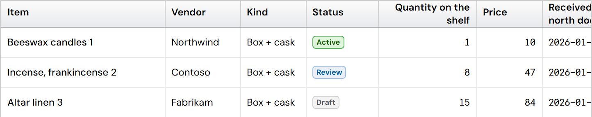
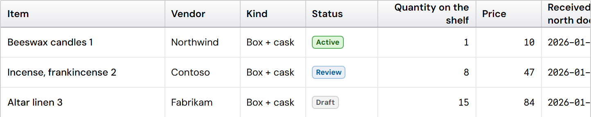
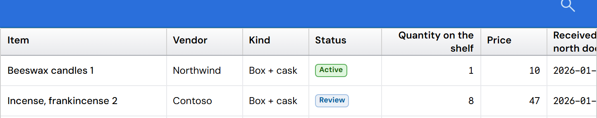
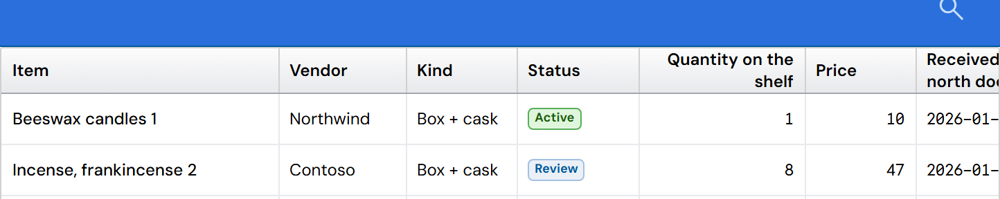

DataGrid header: short titles stay in the middle when another title wraps (PR #293)
Pictures of the real DataGrid on the design spec's Data grid page (Wrapped headers example), taken from the code before and after the change. It is the approved 0.69 header design: silver header, gray lines, H3 hover, no sort arrow. Nothing in that design changes.
- When a long title wraps to two lines ("Quantity on the shelf"), the header grows taller.
- Before: the short titles (Item, Vendor, Kind, Status, Price, Notes) stayed at the top: 2px above the middle.
- After: every title sits in the middle of the header. Measured offset: 0px for every column, at both densities.
- Headers where no title wraps look exactly the same as before.
Compact


Standard


The change is one line in the DataGrid stylesheet: a header column's content fills its column's height, so the title centers in the whole header. Measurements are in before.json and after.json beside this page; the pictures are made by capture.js from the two versions of the code.